|
В. И. ЕЛИСЕЕВ ВВЕДЕНИЕ В МЕТОДЫ ТЕОРИИ
ФУНКЦИЙ ПРОСТРАНСТВЕННОГО КОМПЛЕКСНОГО ПЕРЕМЕННОГО |
|
5.5.1. Вывод формулы состояния ядерной материи
Ядерная материя есть один из уровней структурного образования материи, под уровнем следует понимать интервал изменения измерений пространства, в пределах которого формируется тот или иной вид материи.
Соответствие между числом измерений пространства - n, зарядом атомного ядра -
Z, периодичностью расположения атомных ядер по рядам в таблице Д.И. Менделеева было обосновано и доказано с помощью алгебры комплексного n - мерного пространства в § 3, §4 главы 4.Периодичность расположения атомных ядер в таблице элементов соответствует ряду сочетаний из n / понимается
число измерений / по 2,| 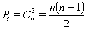 | (5.18.) |
Комбинация сочетаний
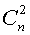 в комплексном пространстве соответствует числу e - туннелей сформированных в пространстве.Одновременно e - туннель соответствует величине заряда в одном пространстве и периодичности формирования
уровней в другом пространстве по величине размерности.В этом смысле заряд не может быть дробным, но число измерений пространства, соответствующее подуровням
материи может быть дробным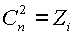, 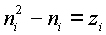
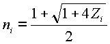
Для таблицы элементов периодичность соответствует
9-ти - 10 -ти зарядам.Эту периодичность
Pi принимаем за нулевую исходную P0 периодичность.Следовательно каждое ядро имеет
| 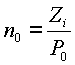 | (5.19.) |
e - туннелей и находится в пространстве c числом измерений n определяемым формулой (5.18) и периодичностью Pi возбужденных состояний по отношению к нулевой периодичности - Р0 по формуле (5.19).
Количественное соответствие между числом измерений, зарядом и количеством e - туннелей в пространстве (
Y) является отражением физической сущности формирование материи, выраженной принципом насыщения e - туннелей обменной энергией.Увеличение обменной энергией обменных стволов вызывает перестройку атомного ядра.
Периодическая таблица атомных ядер может быть растянута в одну строчку при
Pi=105, либо сжата в столбец и вытянута по вертикали при Pi=1.Ядерные e - стволы пропускают строго определённую массу, соответствующую периодичности структурного уровня.
Следуя гипотезе взаимодействия пространств можно утверждать, что величина
Pi в конечном счёте определяет величину давления между пространствами, которое и определяет как радиус ядра так и его положение в периодической таблице.В теории ядерных сил утверждается, что ядерные силы обусловлены обменном между нуклонами мезонами и открыт целый ряд мезонов. Мезонный характер ядерных сил, сложная структура нуклонов и то, что протон есть наименьший по массе
барион - все это теоретические и экспериментально, установленные факты. К настоящему времени ясно также, что при росте величины обменного кванта - его массы возможно осуществление замены нуклонов на барионы большей массы при соответствующей перестройки ядра.При слиянии нуклонов в ядерную систему, каждый из них
выделяет в пространство более высокой размерности / чем то в котором они находятся сами/ обменную энергетическую массу 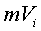 которая двигаясь по вихревым траекториям типа С3, определенным при исследовании многосвязности комплексного пространства глава 1. Траектории включают в себя ядерные стволы как неотъемлемую часть.Как было обосновано в предыдущей главе поле ядерных
сил есть самосогласованное поле стволов взаимодействия.Таким образом, количество взаимодействующих частиц - А,
величина обменного кванта , приходящаяся на одну частицу А, периодичность - Рi, определяющая периодичность и положение ядра в атомной системе, в конечномсчете определяют размер ядра Rя, энергию связи - Eсв, энергию возбуждения, его свойства в ядерных реакциях.
По предлагаемой и разобранной выше подробно гипотезе взаимодействия пространств, пространство ядра с величиной обменный массы на один нуклон
, через e i -туннели оказывает давление на пространство единичных блоков в котором находятся нуклоны .По соотношению Гейзенберга радиус нуклона можно определить по формуле (
5.6).Размер e - туннеля взаимодействующий частиц одной размерности не может равняться размеру e - туннеля
другой размерности, так как в этом случае произойдёт вырождение одной размерности. Многонуклонная система имеет несколько e - туннелей рис 53, поперечное сечение которых не может превышать поперечное сечение нуклонаНуклоны как самостоятельно движущиеся частицы стремятся занять минимальный объём в пространстве при своём слиянии в ядерную систему с минимальным действительным радиусом
Rя.На рис 53 представлены схемы формирования ядер периодической таблицы от водорода
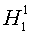 до ксенона 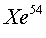. Заполнение ядерных оболочек / для каждой схемы дана матрица заполнения/ выполнено с соблюдением принципа минимального радиуса Rя для A - нуклонов о соблюдением расчётного количества e - туннелей согласно рис. 53.На рис. 53 дана модель ядра урана -
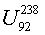.Модуль комплексных координат действительная величина, для любого числа измерений пространства, так как только три направления в пространстве имеют протяжённость. В связи с этим можно для любого ядра говорить, об его объёме и объёме его оболочек.
Из соотношения Гейзенберга определим максимальную толщину мнимой оболочки
| 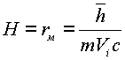, | (5.20.) |
где
- усреднённая максимальная величина обменного кванта на один нуклон в ядре.Обменная масса, находящаяся в мнимой оболочке равна
| 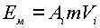 | (5.21.) |
Объём мнимой оболочки рассчитывается по формуле (
5.7)Плотность энергии в мнимой оболочке
| 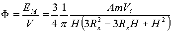 | (5.22.) |
Давление обменной массы через один e - туннель выразится как произведение плотности F , площади кольца - Sк толщины мнимой оболочки
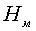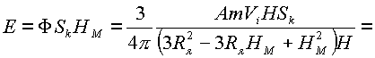
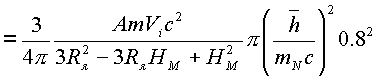
Площадь сечения нуклона можно подсчитать, приняв за его радиус величину его электрического радиуса, надежно установленного экспериментальными исследованиями
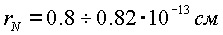,
то есть
| 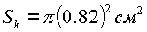 | (5.23.) |
В формуле энергии связи стоит квадрат длинны, поэтому величину 10
-26 опускаем.В итоге имеем выражение
| 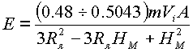 | (5.24.) |
Нуклоны и мезоны находятся в одной ядерной системе, поэтому высоту
HM корректируем по принятому радиусу протона| 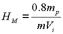 | (5.25.) |
Корректировка дает выражение
| 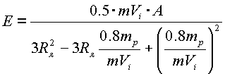 | (5.26.) |
Это выражение дает энергию связи, приходящуюся на один ядерный ствол. Полная энергия связи ядра атома должна учитывать количество n
i - ядерных стволов конкретного ядра и его состояние в периодической таблице, то есть величину Pi [24], [25], [26].Окончательная формула энергии связи атомного ядра выразится:
| 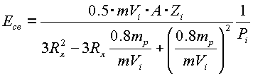 | (5.27.) |
формула (5.27) определяет связь основных параметров атомного ядра с учётом его состояния:
| 10+13 Rя | — радиус ядра |
| Zi | — заряд ядра |
| Ai | — число нуклонов в ядре, |
| — величина обменного кванта на один нуклон, | |
| Pi | — положение ядра в системе, |
поэтому её можно назвать уравнением состояния ядерной материи.
Мини оглавление:
[0], [1.1.1, 1.1.2, 1.1.3, 1.1.4, 1.1.5, 1.1.6, 1.1.7, 1.1.8, 1.2, 1.2.1, 1.2.2, 1.2.2.a, 1.2.2.b, 1.2.2.c, 1.2.2.d, 1.2.2.e, 1.2.2.f, 1.2.2.g, 1.2.2.h, 1.2.3, 1.3.1, 1.3.2, 1.3.3, 1.3.4, 1.3.5, 1.3.6, 1.4.1, 1.4.2, 1.5, 1.6, 1.7.1, 1.7.2, 1.7.3.1, 1.7.3.2, 1.7.3.3, 1.7.4.1, 1.7.4.2, 1.8.1], [2.1, 2.2],[3.1, 3.2, 3.3, 3.4.1, 3.4.2, 3.4.3, 3.4.4, 3.4.5],[4.1, 4.2, 4.3, 4.4],[5.1, 5.1.Рис.52, 5.2, 5.3, 5.4, 5.4.Т1, 5.4.Т2, 5.4.Т3, 5.5.1, 5.5.2, 5.5.3, 5.5.4],[6.1.1, 6.1.2, 6.2.1, 6.2.2, 6.2.3, 6.2.4, 6.2.5, 6.3, 6.4.1, 6.4.2, 6.5.1, 6.5.2],[7.1, 7.2, 7.3, 7.4, 7.5, 7.6, 7.7.1, 7.7.2, 7.8.1, 7.8.2, 7.8.3, 7.9],[8.1, 8.2.1, 8.2.2, 8.3, 8.4, 8.5, 8.6, 8.6.T1, 8.7, 8.8.1, 8.8.2, 8.8.3, 8.9.1, 8.9.2, 8.9.3, 8.10, 8.10.T2, 8.10.T3],[9.1, 9.2, 9.3, Рис.88, 89, 90, 91, 92, 93, 94, 95, 96, 97, 98, 99, 100],[10.1, 10.2, 10.3, 10.4, 10.5, 10.6, 10.7, 10.8, 10.9, 10.10, 10.11, 10.12, 10.13, 10.14, 10.15.1, 10.15.2, 10.16.1, 10.16.2, 10.17, 10.18],[11]
Размещенный материал является электронной версией книги: © В.И.Елисеев, "Введение в методы теории функций пространственного комплексного переменного", изданной Центром научно-технического творчества молодежи Алгоритм. - М.:, НИАТ. - 1990. Шифр Д7-90/83308. в каталоге Государственной публичной научно-технической библиотеки. Сайт действует с 10 августа 1998.
E-mail: mathsru@gmail.com